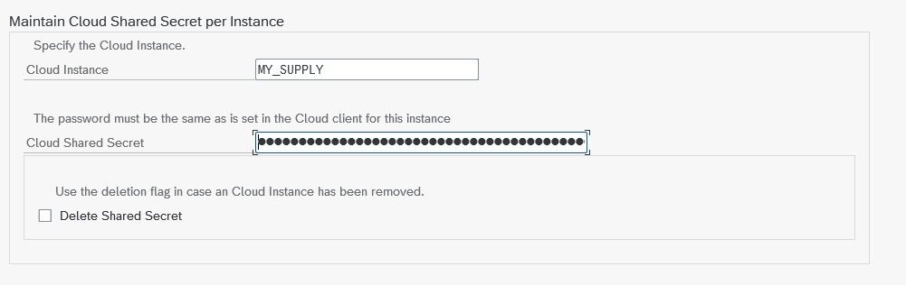

Connectors
mysupply Connector
Overview
The ASAPIO mysupply connector integrates SAP purchase requisition (PR) items with the mysupply AI-powered procurement platform. The integration enables:
- Outbound: React to PR item changes in SAP and send the PR item data to the mysupply Demand API when the relevant blocked indicator is set.
- Inbound: Poll the mysupply Demand API for closed deals and update the corresponding PR items in SAP via IDoc processing.
Basic Configuration
SSL Certificate
Import the mysupply server certificate into STRUST (SSL Client Standard) to enable HTTPS connections.
RFC Destination
Create an HTTP RFC destination (SM59, type G) pointing to test-api.mysupply.io:443 (or production endpoint). Store the mysupply API key in /ASADEV/SCI_TPW.
Cloud Instance
Create the connection instance in /ASADEV/ACI_SETTINGS with Cloud Type MYSUPPLY.

Outbound Configuration
Configure the outbound object with these function modules:
| Role | Function Module |
|---|---|
| Extractor | /ASADEV/ACI_GEN_PDVIEW_EXTRACT |
| Response Handler | /ASADEV/RESP_MYSUPPLY_PR |
| Formatter | /ASADEV/DEMA_CUSTOM_FORMATTER |
| Payload Design | /ASAPIO/MYSUPPLY_DEMAND version V1 DEMAND |
Set up the event linkage for Business Object BUS2105 (Purchase Requisition), event CHANGED.
The default filter in the Payload Designer restricts sending to PR items where eban~blcked = 1. Adjust as needed for your process.
Standard Outbound Fields
The default payload definition /ASAPIO/MYSUPPLY_DEMAND includes the following fields. Use transaction /ASADEV/DESIGN to view or extend the field mapping.
| SAP table/field | Description |
|---|---|
EBAN-BANFN | Purchase requisition number |
EBAN-BNFPO | Item number |
EBAN-MATNR | Material number |
EBAN-MENGE | Quantity |
EBAN-TXZ01 | Short text |
EBAN-PREIS | Valuation price (per price unit) |
EBAN-PEINH | Price unit |
EBAN-MEINS | Unit of measure |
EBAN-WAERS | Currency |
EBAN-LIFNR | Desired vendor – creditor number |
| (calculated) | Desired vendor name (from LFA1-NAME1) |
| (calculated) | Desired vendor primary email (from vendor communication settings) |
EBAN-WERKS | Plant code |
| (calculated) | SAP source system |
| (calculated) | Transfer date and time |
Inbound Configuration
The inbound direction polls mysupply for closed deals and updates PR items via IDoc. Configure:
- WE81: Create a message type for the mysupply inbound IDoc
- WE82: Link message type to basic type
/ASADEV/ACI_GENERIC_IDOC - WE57: Assign the inbound function module
/ASADEV/INB_DEAL_MYSUPPLYto the message type and IDoc type/ASADEV/ACI_GENERIC_IDOC - BD51: Register the function module for inbound processing
- WE42: Define the process code for inbound handling
- WE20: Set up the partner profile for logical system
LOCAL(default). To use a different logical system, add default attributeACI_EDI_PARTNER_PROFILEon the connection instance in SPRO.
Inbound Fields Updated in SAP
| SAP Field | Source in mysupply |
|---|---|
EBAN-PREIS | Awarded price from mysupply deal |
EBAN-FLIEF | Fixed supplier from mysupply deal |
EBAN-MENGE | Awarded quantity |
Optional Inbound Fields
Additional fields can be mapped via BAdI method CHANGE_PR_DATA_BEFORE_POST:
| SAP Field | Description |
|---|---|
EBAN-LIFNR | Desired vendor (instead of fixed vendor) as returned from mysupply |
EBAN-WAERS | Currency as returned from mysupply |
EBAN-BPUEB | Can be set to a specific value |
Unit of Measure Mapping
The connector maps between mysupply and SAP units of measure. Any value not listed below is mapped to other.
| SAP UoM | mysupply UoM |
|---|---|
| CM | centimeter |
| CCM | cubic-centimeter |
| M3 | cubic-meter |
| G | gram |
| M | meter |
| MM | millimeter |
| M2 | square-meter |
| KG | kilogram |
| KWH | kilowatt-hour |
| L | liter |
| PC | piece |
| CM2 | square-centimeter |
| TON | ton |
| MIN | minute |
| HOUR | hour |
| DAY | day |
| MONTH | month |
| (any other) | other |
BAdI Extensions
Enhancement spot /ASADEV/MYSUPPLY_INBOUND provides the following BAdI methods:
| Method | Description |
|---|---|
MAP_DEAL_FROM_IDOC_SINGLE | Customer mapping – single field |
MAP_DEAL_FROM_IDOC | Customer mapping – full deal |
CHANGE_PR_DATA_BEFORE_POST | Modify PR data before posting to SAP |
CUSTOM_POST | Custom processing after PR has been changed |
CHANGE_RUNTIME_PARAMETER | Change runtime parameters of the inbound process |
Known Restrictions
- Multiple changes to a PR item result in multiple demands being created in mysupply. This can be changed to only send a PR item once (configurable on request).
EBAN-PEINH(price unit) must remain the same as in the PR, as this is not handled by the mysupply API.- ASAPIO Payload Designer is supported for mysupply to add custom fields to the outbound payload.
- Purchase requisitions may not have a fixed vendor assigned before being sent to mysupply, as SAP standard does not allow updating a fixed vendor via this process.